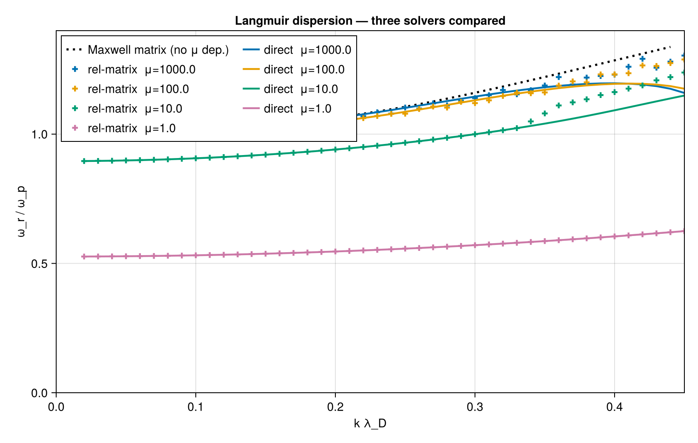
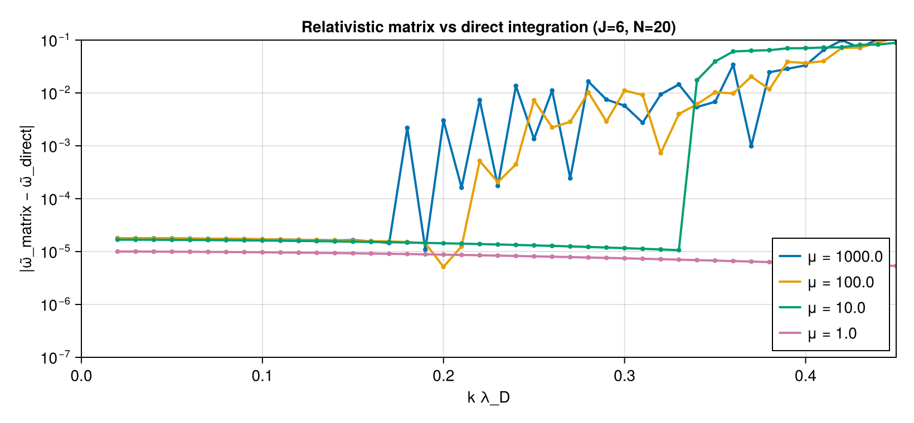

Relativistic Langmuir wave — three solvers compared
This page compares three independent solvers for the same problem — the longitudinal (Langmuir) mode in an unmagnetized, isotropic plasma — implemented in PlasmaBO.RelativisticLongitudinal.
| Method | Function | Approach |
|---|---|---|
| Direct integration | solve_relativistic_direct | QuadGK on the relativistic dielectric kernel + bisection. Single root per call, used as ground truth. |
| Relativistic matrix | solve_relativistic_matrix | BO-style: Padé approximation of Lerche's F-function + Gauss–Laguerre quadrature in γ + companion-matrix eigenvalues. Returns all roots simultaneously. |
| Non-relativistic matrix | solve_maxwellian_matrix | Classical Maxwellian Langmuir wave via standard J-pole expansion of Z(ζ). Independent of μ. Baseline. |
The three methods should converge in the classical limit μ ≡ mc²/T → ∞. They will differ exactly where relativistic kinematics matter.
Background — the dielectric
For an isotropic Maxwell–Jüttner background of inverse temperature μ:
\[\varepsilon_l(\tilde\omega, \tilde k) = 1 + \frac{\mu}{2 \tilde k^2 \, K_2(\mu) e^{\mu}} \int_1^{\infty} (\gamma^2-1) \, e^{-(\gamma-1)\mu} \left[\frac{2}{\beta} - \frac{u}{\beta^2} \ln\!\frac{u+\beta}{u-\beta}\right] d\gamma\]
with $u = \tilde\omega / (\tilde k \sqrt\mu)$, $\beta = \sqrt{\gamma^2-1}/\gamma$, $\tilde\omega = \omega/\omega_p$, $\tilde k = k \lambda_D$. The bracketed factor is $(2/\beta)\,F(u/\beta)$ where $F(s) = 1 - (s/2)\ln((s+1)/(s-1))$ is Lerche's F-function.
The k → 0 asymptote is $\tilde\omega_0^2(\mu) = \mu\,\langle\beta^2\rangle_J/3$, implemented as omega0_asymptotic. Limits:
- μ → ∞ (classical): $\tilde\omega_0 \to 1$ (standard $\omega_p$).
- μ → 0 (ultra-rel): $\tilde\omega_0 \to \sqrt{\mu/3} \to 0$.
How each method works
Direct integration. Adaptive QuadGK on the principal value of the γ-integral, with a Landau-residue closed form for the imaginary part. Then bisect Re εl = 0. Bracket is auto-chosen around ``\tilde\omega0(\mu)`` and scanned top-down so the highest-frequency root (the Langmuir branch) is returned even when a sub-Langmuir companion exists.
Relativistic matrix. [J−1/J] Padé of F(s) in t = 1/s² gives J real poles $s_j^2 \in (0, 1)$ — they approximate the s ∈ [-1, 1] log branch cut. Substituting into the kernel and using partial fractions:
\[\varepsilon_l(\tilde\omega) - 1 = \sum_{j,q} \left[ \frac{A_{jq}}{\tilde\omega - \varphi_{jq}} - \frac{A_{jq}}{\tilde\omega + \varphi_{jq}} \right], \quad \varphi_{jq} = \beta(\gamma_q) \, s_j \, \tilde k \sqrt\mu\]
with Gauss–Laguerre nodes $\{\gamma_q, w_q\}$ on γ ∈ [1, ∞) (e⁻ˣ weighted). The 2JN simple poles are linearised into a companion matrix of size 2JN+1; its eigenvalues are all roots of ε_l = 0. Default J=6, N=20 → 241×241 dense eigenproblem (≈ 40 ms via LAPACK).
Non-relativistic matrix. Standard Z(ζ) ≈ Σⱼ bⱼ/(ζ − cⱼ) from PlasmaBO.get_jpole_coefficients. With $\zeta = \tilde\omega/(\sqrt 2 \tilde k)$ and the identity $\sum b_j = -1$:
\[\varepsilon_l(\tilde\omega) - 1 = \frac{\sqrt 2}{\tilde k} \sum_j \frac{b_j c_j}{\tilde\omega - \sqrt 2 \tilde k c_j}.\]
J=8 J-pole gives a 9×9 matrix — tiny and instantaneous. The classical Z-function admits complex poles, so this matrix naturally captures Landau damping (the relativistic Padé-of-F variant does not yet — see Note below).
Side-by-side comparison
using PlasmaBO
using Printf
println("μ k̃ ω̃₀ direct rel-matrix Maxw-matrix")
println(repeat("-", 64))
for μ in [1000.0, 100.0, 10.0, 1.0, 0.3]
ω0 = omega0_asymptotic(μ)
for k̃ in [0.05, 0.1, 0.2, 0.3]
ωdir, _ = solve_relativistic_direct(k̃, μ)
ωrel = langmuir_root(
solve_relativistic_matrix(k̃, μ; J=6, N=20);
near = ω0 + 1.5*k̃^2/ω0,
)
ωmax = langmuir_root(solve_maxwellian_matrix(k̃; J=8))
rrel = ωrel === nothing ? NaN : real(ωrel)
rmax = ωmax === nothing ? NaN : real(ωmax)
@printf("%5.1f %.2f %.4f %.5f %.5f %.5f\n",
μ, k̃, ω0, ωdir, rrel, rmax)
end
endμ k̃ ω̃₀ direct rel-matrix Maxw-matrix
----------------------------------------------------------------
1000.0 0.05 0.9988 1.00250 1.00248 1.00376
1000.0 0.10 0.9988 1.01388 1.01387 1.01519
1000.0 0.20 0.9988 1.06231 1.05930 1.06391
1000.0 0.30 0.9988 1.14504 1.13930 1.15989
100.0 0.05 0.9878 0.99137 0.99135 1.00376
100.0 0.10 0.9878 1.00232 1.00231 1.01519
100.0 0.20 0.9878 1.04847 1.04848 1.06391
100.0 0.30 0.9878 1.13093 1.11983 1.15989
10.0 0.05 0.8954 0.89819 0.89818 1.00376
10.0 0.10 0.8954 0.90653 0.90652 1.01519
10.0 0.20 0.8954 0.94048 0.94047 1.06391
10.0 0.30 0.8954 0.99966 0.99965 1.15989
1.0 0.05 0.5265 0.52773 0.52772 1.00376
1.0 0.10 0.5265 0.53142 0.53141 1.01519
1.0 0.20 0.5265 0.54615 0.54614 1.06391
1.0 0.30 0.5265 0.57057 0.57057 1.15989
0.3 0.05 0.3114 0.31212 0.31212 1.00376
0.3 0.10 0.3114 0.31423 0.31423 1.01519
0.3 0.20 0.3114 0.32263 0.32262 1.06391
0.3 0.30 0.3114 0.33651 0.33651 1.15989Each method tracks the Langmuir mode differently as μ varies:
- At large μ (classical, T ≪ mc²) all three methods agree.
- At moderate μ (T ~ mc²/10) the two relativistic methods agree with each other but disagree with the Maxwellian baseline by O(1) — this gap is exactly the relativistic correction the method is designed to capture.
- At very small μ (ultra-relativistic, T ≳ mc²) the relativistic methods give $\tilde\omega \ll 1$ while the Maxwellian method still predicts $\tilde\omega \approx 1$ — the latter is just wrong.
Plots
using CairoMakie
ks = 0.02:0.01:0.45
μs = [1000.0, 100.0, 10.0, 1.0]
fig = Figure(size = (820, 520), fontsize = 14)
ax = Axis(fig[1,1],
xlabel = "k λ_D", ylabel = "ω_r / ω_p",
title = "Langmuir dispersion — three solvers compared")
colors = Makie.wong_colors()
_real_or_nan(x) = x === nothing ? NaN : real(x)
# Maxwellian baseline (μ-independent): single curve
ωmax_curve = Float64[
_real_or_nan(langmuir_root(solve_maxwellian_matrix(k̃; J=8)))
for k̃ in ks
]
lines!(ax, ks, ωmax_curve;
color = :black, linewidth = 2.5, linestyle = :dot,
label = "Maxwell matrix (no μ dep.)")
# Direct integration + relativistic matrix per μ
for (i, μ) in enumerate(μs)
ω0 = omega0_asymptotic(μ)
ωdir = Float64[]
ωrel = Float64[]
for k̃ in ks
wd, _ = solve_relativistic_direct(k̃, μ)
push!(ωdir, wd)
push!(ωrel, _real_or_nan(langmuir_root(
solve_relativistic_matrix(k̃, μ; J=6, N=20);
near = ω0 + 1.5*k̃^2/ω0,
)))
end
lines!(ax, ks, ωdir; color = colors[i], linewidth = 2.2,
label = "direct μ=$(μ)")
scatter!(ax, ks, ωrel; color = colors[i], marker = :cross, markersize = 9,
label = "rel-matrix μ=$(μ)")
end
xlims!(ax, 0, 0.45); ylims!(ax, 0, 1.4)
axislegend(ax; position = :lt, nbanks = 2, framevisible = true)
save("rel_comparison.png", fig; px_per_unit = 2)
fig
# Error plot: relativistic matrix vs direct
fig2 = Figure(size = (820, 380), fontsize = 14)
ax2 = Axis(fig2[1,1],
xlabel = "k λ_D", ylabel = "|ω̃_matrix − ω̃_direct|",
title = "Relativistic matrix vs direct integration (J=6, N=20)",
yscale = log10)
for (i, μ) in enumerate(μs)
ω0 = omega0_asymptotic(μ)
xs = Float64[]; ys = Float64[]
for k̃ in ks
wd, _ = solve_relativistic_direct(k̃, μ)
isnan(wd) && continue
e = langmuir_root(
solve_relativistic_matrix(k̃, μ; J=6, N=20);
near = ω0 + 1.5*k̃^2/ω0,
)
e === nothing && continue
push!(xs, k̃); push!(ys, max(1e-10, abs(real(e) - wd)))
end
lines!(ax2, xs, ys; color = colors[i], linewidth = 2,
label = "μ = $(μ)")
scatter!(ax2, xs, ys; color = colors[i], markersize = 6)
end
xlims!(ax2, 0, 0.45); ylims!(ax2, 1e-7, 1e-1)
axislegend(ax2; position = :rb, framevisible = true)
save("rel_comparison_err.png", fig2; px_per_unit = 2)
fig2
Reading the comparison
The matrix-vs-direct error stays at ~10⁻⁵ over the range where Landau damping is absent (u = ω/(kc) > 1, super-luminal). It grows by 2–3 decades once the wave becomes sub-luminal and Landau damping turns on, because the real-pole Padé of F cannot represent the log-cut residue.
The Maxwellian matrix dispersion (dotted) ignores μ entirely. The gap between it and the direct curve is the relativistic correction. For μ = 1 (T = mc²) the gap is comparable to ω_p itself — the classical solver is roughly 100 % off and the relativistic one is necessary.
When to use which solver
- Use the direct solver when you need γ (Landau damping) in the weak-damping regime, or for cross-checking a matrix-method root.
- Use the relativistic matrix solver for ω(k) sweeps and dispersion surfaces — it returns all roots at once, no continuation needed. Current limitation: real-pole Padé does not capture Landau damping; output Im(ω) is zero to numerical precision. Damping requires either a complex-pole rational approximation (AAA / Carrier–Krook–Pearson) or explicit residue injection.
- Use the Maxwellian matrix solver when μ ≫ 1000 or when you only care about the classical limit. It's a 9×9 eigenproblem and is essentially free.
Performance
| Solver | Cost per (k̃, μ) | Notes |
|---|---|---|
| Direct integration | 10–50 ms | bracket scan + bisect; single root |
| Relativistic matrix (J=6, N=20) | ≈ 40 ms | 241×241 dense eigvals; all roots |
| Maxwellian matrix (J=8) | ≈ 0.1 ms | 9×9 eigenproblem; all roots |
API reference
PlasmaBO.RelativisticLongitudinal — Module
RelativisticLongitudinalExperimental: dispersion of the longitudinal (Langmuir) mode in an unmagnetized, isotropic Maxwell–Jüttner plasma.
Provides three independent solvers for the same problem so they can be cross-checked:
solve_relativistic_direct— direct numerical integration of the relativistic dielectric kernel; treated as ground truth.solve_relativistic_matrix— BO-style matrix eigenvalue solver via Padé approximation of Lerche's F-function and Gauss–Laguerre quadrature in γ. Returns all roots at once, no initial guess. Valid for super-luminal modes (no Landau damping captured by the real-pole Padé).solve_maxwellian_matrix— standard non-relativistic matrix method (J-pole expansion of the Z-function) for the same problem. The fully classical baseline.
Conventions: ω̃ ≡ ω/ωp, k̃ ≡ k λD, μ ≡ mc²/T (T = electron temperature). The classical limit is μ → ∞ (T ≪ mc²).
PlasmaBO.RelativisticLongitudinal.solve_relativistic_direct — Function
solve_relativistic_direct(k̃, μ; ωlow=nothing, ωhi=nothing, n=500) -> (ωr, γ)Find the Langmuir mode by bisecting Re εl(ω) = 0, then estimate the damping rate γ from the weak-damping formula γ ≈ −Im εl / ∂ω Re εl.
By default scans an ω̃ window centered on the asymptotic k → 0 frequency ω̃₀(μ) = √(μ ⟨β²⟩J / 3) (see [`omega0asymptotic`](@ref)). This skips spurious roots that the principal-value integrand can show at small ω̃.
Ground-truth solver for cross-validation. Returns one root per call.
PlasmaBO.RelativisticLongitudinal.solve_relativistic_matrix — Function
solve_relativistic_matrix(k̃, μ; J=6, N=20) -> Vector{ComplexF64}Returns all eigenvalues ω̃ of the relativistic dispersion relation built by:
- [J-1/J] Padé of Lerche's F(s) → J poles in s² (real, in (0,1)).
- Gauss–Laguerre quadrature with N nodes in γ ∈ [1, ∞).
- Companion-matrix linearisation (BO trick).
Matrix dimension is 2·J·N + 1 (≈ 241 for default J=6, N=20). Per-call cost is dominated by LAPACK eigvals on this dense matrix (≈ 40 ms).
The physical Langmuir root is the largest-magnitude real eigenvalue; others are quadrature-artifact "ballistic" modes clustered near the pole positions ±β(γq)·sj·k̃√μ.
Damping is NOT captured because all Padé poles are real (see Note in module docstring). Extension via complex-pole rational approximation (AAA / Carrier– Krook–Pearson) would recover Landau damping.
PlasmaBO.RelativisticLongitudinal.solve_maxwellian_matrix — Function
solve_maxwellian_matrix(k̃; J=8) -> Vector{ComplexF64}Returns all eigenvalues of the classical (non-relativistic) Langmuir dispersion relation 1 + (1/k̃²)[1 + ζZ(ζ)] = 0, with ζ = ω̃/(√2 k̃), using the standard J-pole expansion Z(ζ) ≈ Σⱼ bⱼ/(ζ − cⱼ) from PlasmaBO.get_jpole_coefficients.
Uses the identity Σbⱼ = -1 to write the dispersion as ε_l − 1 = (√2/k̃) Σⱼ bⱼ cⱼ /(ω̃ − √2 k̃ cⱼ), giving a (J+1)×(J+1) companion matrix — tiny and instantaneous. This is the natural baseline against which the relativistic solvers are compared at large μ.
Note: this solver has no μ dependence — that is exactly the point of the comparison. The classical limit assumes all particles move slower than the speed of light and the dispersion depends only on k̃.
PlasmaBO.RelativisticLongitudinal.juttner_dielectric — Function
juttner_dielectric(ω̃, k̃, μ; landau_branch=true) -> ComplexF64Longitudinal dielectric ε_l(ω, k) for a single-species electron plasma with isotropic Maxwell–Jüttner equilibrium of inverse temperature μ = mc²/T.
When landau_branch=true (default), the Landau prescription ω → ω + i 0⁺ is applied via principal-value split + closed-form residue (giving Im ε > 0 in the resonance region β > u). When false, only the principal-value real part is computed.
This is the direct integration ground truth used by solve_relativistic_direct.
PlasmaBO.RelativisticLongitudinal.omega0_asymptotic — Function
omega0_asymptotic(μ) -> RealRelativistic Langmuir frequency at k → 0, ω̃₀² = μ · ⟨β²⟩J / 3, where ⟨β²⟩J is the Jüttner expectation of v²/c². Used as seed for root-finding.
Limits: ω̃₀ → 1 as μ → ∞ (classical), ω̃₀ → √(μ/3) → 0 as μ → 0 (ultra-rel).
PlasmaBO.RelativisticLongitudinal.langmuir_root — Function
langmuir_root(eigs; near=nothing, ωmin=0.05) -> ComplexF64 | nothingPick a Langmuir-like root from a vector of dispersion eigenvalues.
- If
nearis given: returns the eigenvalue closest to it (in real part) among those with positive real part and|imag| < 0.1. - If
nearisnothing: returns the largest-real-part eigenvalue aboveωmin— adequate for the non-relativistic matrix method where no ballistic eigenvalues are present.
For the relativistic matrix solver, always pass near: the spectrum contains O(JN) ballistic eigenvalues clustered along the real axis and the physical Langmuir mode is one specific eigenvalue interleaved among them. The natural seed is omega0_asymptotic (the k → 0 relativistic plasma frequency) plus a leading-order thermal shift if available.
PlasmaBO.RelativisticLongitudinal.pade_F — Function
pade_F(J::Int) -> (a::Vector, r::Vector)[J-1/J] Padé approximant of F(s) = 1 − (s/2)·log((s+1)/(s-1)) in the variable t = 1/s², matching the first 2J terms of the asymptotic expansion F(t) = -Σ_{k≥1} t^k/(2k+1).
Returns coefficients (a, r) such that
F(s) ≈ Σⱼ aⱼ / (s² − rⱼ), rⱼ = sⱼ²For all J ≥ 1, the poles rⱼ are real and lie in (0, 1) — they approximate the s ∈ [−1, 1] log branch cut. Consequently the approximation is accurate only for |s| ≳ 1 (super-luminal phase velocities).
Padé saturates around J = 4–6; higher J yields no improvement until quadruple precision is used in the Hankel solve.
PlasmaBO.RelativisticLongitudinal.gauss_laguerre — Function
gauss_laguerre(n::Int) -> (x, w)Gauss–Laguerre nodes and weights for ∫₀^∞ f(x) e⁻ˣ dx ≈ Σ wᵢ f(xᵢ), computed by eigen-decomposition of the Laguerre Jacobi tridiagonal.